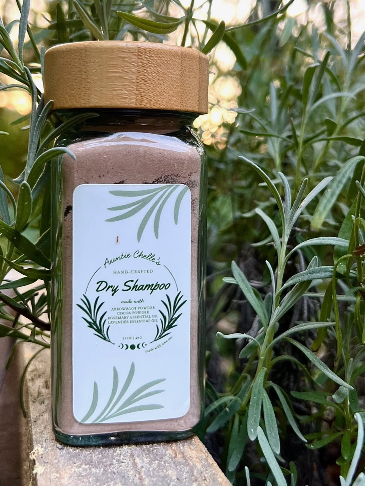
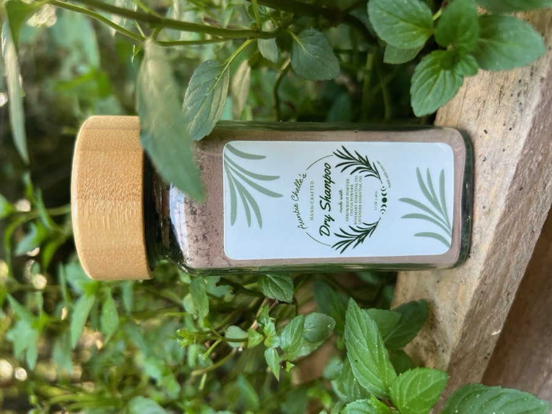
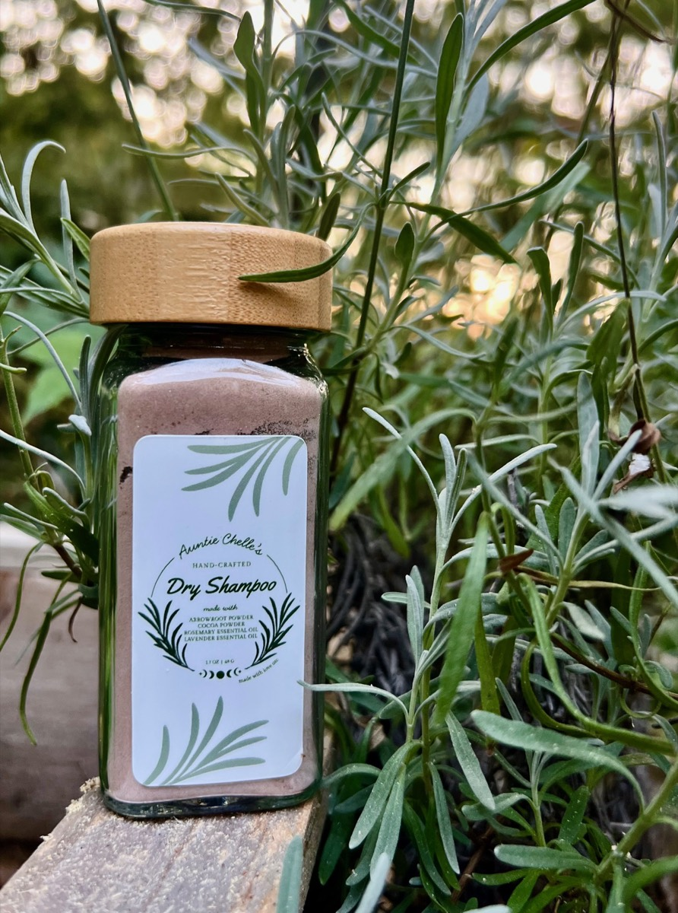

Arrowroot and cocoa, with a few drops of rosemary and lavender essential oil. Four ingredients, blended and jarred by hand, for the mornings you’d rather buy yourself another day than wash your hair.
Checkout is handled by Square. You’ll finish on their page.
A soft white starch ground from the root of a tropical plant, and the ingredient doing the actual work. It takes up the oil at your roots and leaves hair feeling clean and light rather than coated. It’s the gentler cousin of cornstarch — finer, silkier, and far less inclined to sit there looking chalky.
Plain unsweetened cocoa, and it’s in here for colour. It warms the white powder down to a soft brown so it disappears into darker hair instead of sitting on top of it. It also means the jar smells faintly, wonderfully like a bakery, which was not the point but I’m not sorry about it.
A few drops, no more. Rosemary has a long history in traditional hair and scalp preparations, and it’s the first thing you’ll smell when you take the lid off — green and clean and a little bit like the garden.
For the scent, mostly, and because lavender and rosemary have always belonged together. It softens the rosemary’s edge and leaves the whole thing smelling calm rather than sharp.
A word about hair colour
The cocoa is what makes this vanish into brown and dark hair, and it’s also the reason it suits that hair best. If yours is blonde, silver or light red, you can still use it — use less than you think, work it right into the roots with your fingertips, and brush it through properly. Go slowly the first time and see how you get on.
If enough of you ask me for a lighter blend without the cocoa, I’ll make one. Just send me an email and say so.
Shake, work it in, brush it out
Use less than you think you need. The powder is fine and it goes further than it looks — you can always add a little more, but getting it back out takes a hairbrush and some patience.
Most dry shampoo comes out of an aerosol can, which means a propellant, a room full of it, and a canister that can’t be refilled. This is a glass spice jar with a bamboo lid and four things inside it. When you’re through, wash the jar and keep it — it’s a perfectly good jar.
It came about the same way the balm did. I went looking for one I trusted, couldn’t find it, and made it instead.
Arrowroot and cocoa weighed out by hand and sifted together until the colour is even all the way through.
Rosemary and lavender essential oil, a few drops at a time, worked through the powder until the whole batch smells the same.
Spooned into glass jars, capped with bamboo, and labelled at my kitchen table — the same table the balm gets poured on.
Lid on, dry fingers, and keep it off the edge of the bath. Wet fingers in the jar will clump the powder, and once it clumps it doesn’t un-clump.
Working it in before bed gives it all night to do its job, and you wake up with it already brushed in and invisible. This is the trick that makes people keep a jar.
There are essential oils in here. If your scalp runs sensitive, start with a small amount and see how it sits before you make it a habit.
Rather skip the shipping?
If you’re in the Asheville area, message me and we’ll arrange a pickup — or I’ll drop it off if you’re close by. No shipping cost, no waiting on the post office. I’m at markets now and then too; I’ll post market locations on Instagram.
Grass-fed tallow rendered by hand over twenty-four hours and infused with calendula, rosemary, lavender and chamomile. The one that started all of this.
Take a jar home
Batches are small on purpose. When one sells out I mix another.